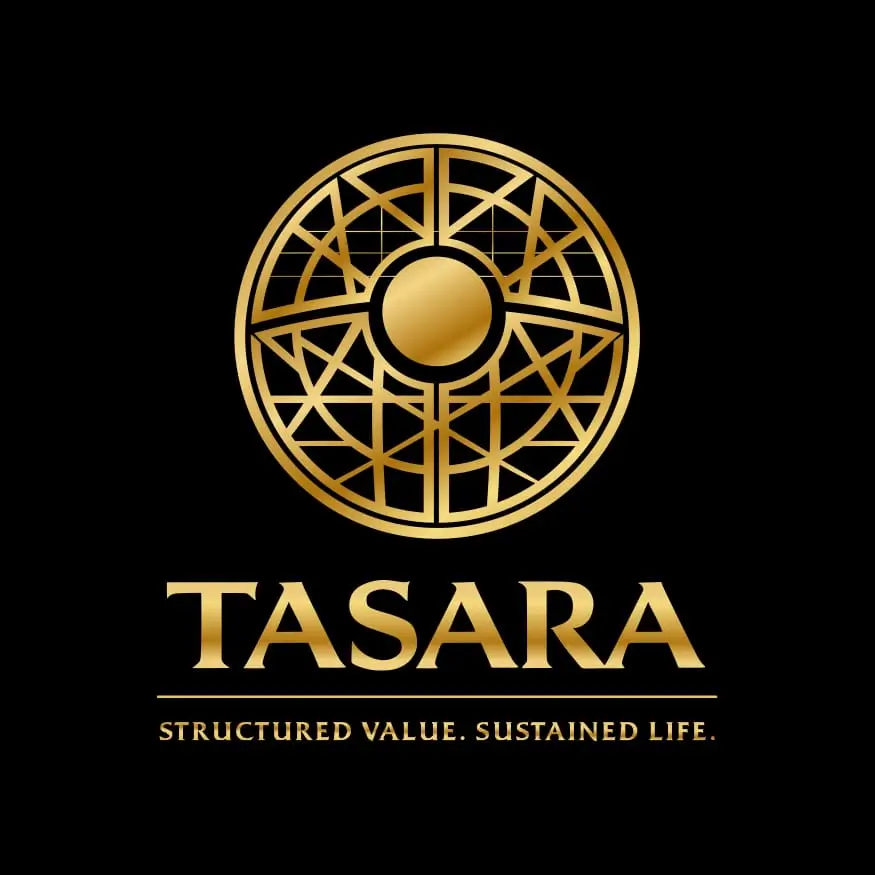

TASARA Economic Systems
Africa's Economic Challenge Is Not Productivity. It Is Structure.
Pan-African Economic Infrastructure — A Division of Iron Mint Stewardship Limited

A Closed-Loop
Economic Operating System
TASARA is a Pan-African closed-loop economic operating system designed to structure, track, and sustain value across individuals, enterprises, and territories.
It is built on a foundational diagnosis: Africa does not lack productivity. It lacks structure. Economic activity happens every day — but without the identity systems, coordination layers, and value-retention frameworks that allow that activity to compound.
Value flows out faster than it builds up. TASARA exists to change that.
System Architecture
TASARA assigns economic identity to participants, tracks activity, validates contributions, and retains value within a structured loop.
Identity Infrastructure
TASARA ID & TASARA Passport
Economic Activity Layer
Trade tracking, service documentation, contribution validation
Value Systems
Credibility scoring, structured capital access, economic reputation
Continental Integration
Cross-border identity and value exchange across Africa's 54 markets
Stewardship Economy
TASARA's first active expression — the governed Stewardship Economy
Explore Each Pillar
Identity Infrastructure: TASARA assigns every participant an economic ID and Passport — creating verifiable, persistent economic identity that persists across borders and systems.
TASARA's First Active Expression
The Stewardship Economy is live. A governed, closed-loop commercial ecosystem built for serious builders who understand that value must be structured, not just generated.